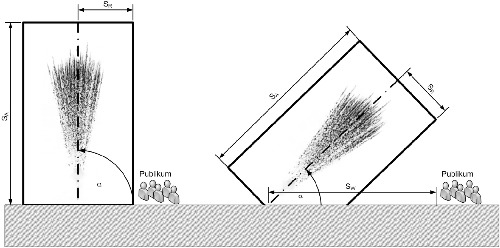

- 1
Begriffsbestimmungen
- 1.1
Abbrennplatz ist die Fläche, die beim Verwenden von pyrotechnischen Gegenständen (Abbrennen eines Feuerwerks) für das Aufstellen der pyrotechnischen Gegenstände sowie der Hilfsgeräte (inklusive benötigter Rohre für die Verwendung) benötigt wird.
- 1.2
Außenbereich umfasst alle Bereiche außer den Innenbereich (zum Beispiel Konzertbühne unter freiem Himmel).
- 1.3
Innenbereich ist ein allseitig umschlossener Raum, der Lüftungseinrichtungen beinhalten kann.
- 1.4
Bodenfeuerwerk sind pyrotechnische Gegenstände, die auf dem Boden aufgestellt oder bodennah angebracht werden und sich beim Verwenden nicht von ihrer Halterung lösen (insbesondere Fontänen, Vulkane, bengalische Lichter, Knallkörper und Sonnen).
- 1.5
Effektausdehnung eines pyrotechnischen Gegenstandes ist der Raum, in den die Effektkörper beim Ausstoß oder der Zerlegung des pyrotechnischen Gegenstandes weggeschleudert werden und der durch die Effekthöhe und die radiale Effektweite bestimmt wird.
- 1.6
Effekthöhe eines pyrotechnischen Gegenstandes ist der vom Boden des Gegenstandes gemessene maximale Abstand des Effektes in Ausstoßrichtung.
- 1.7
Radiale Effektweite eines pyrotechnischen Gegenstandes ist der Abstand zwischen der Linie der Verwendungsrichtung und dem am weitesten entfernten Effektkörper.
- 1.8
Schutzabstand ist der Abstand von der Verwendungsstelle, in dem beim Verwenden von pyrotechnischen Gegenständen eine Gefährdung, zum Beispiel durch brennende Teile oder Reststücke, gegeben ist.
- 1.9
Weggeschleuderte Reststücke sind inerte Teile von pyrotechnischen Gegenständen, die während der Funktion ausgestoßen oder weggeschleudert werden und auf Grund ihrer Masse oder mechanischen Beschaffenheit (zum Beispiel harte Endabschlüsse aus Gips) eine Gefährdung darstellen.
- 1.10
Zerlegungshöhe ist der senkrechte Abstand zwischen der Verwendungsstelle und der Horizontalen, die durch den Ort der Zerlegung verläuft.
- 1.11
Verantwortliche Person im Sinne dieser Anlage ist eine zur Verwendung pyrotechnischer Gegenstände der jeweiligen Kategorie berechtigte, vom Erlaubnisinhaber beauftragte Person.
- 2
Ortsabhängige und variable Einflussfaktoren
- 2.1
Lage und Beschaffenheit des Ortes für die Verwendung, die Verwendungsmodalitäten und andere Bedingungen im Innen- oder Außenbereich
- 2.1.1
Der Erlaubnisinhaber oder eine verantwortliche Person hat
- 2.1.1.1
bei der Auswahl der pyrotechnischen Gegenstände, der Hilfsgeräte und der Art und Weise des Verwendens (zum Beispiel des Verwendungs- oder Neigungswinkels) sowie bei der Ermittlung des anzuwendenden Schutzabstandes für das Verwenden dieser pyrotechnischen Gegenstände die Bedingungen, die im Umfeld des Abbrennplatzes vorliegen, hinreichend zu beachten,
- 2.1.1.2
die zur Ermittlung der Schutzabstände notwendigen Angaben und Informationen sowie den ermittelten Schutzabstand zu dokumentieren,
- 2.1.1.3
die im Außenbereich zu berücksichtigende Windgeschwindigkeit an geeigneter Stelle vor Beginn des Verwendens in einer Höhe von 2 m zu messen.
- 2.2
Einhaltung der Schutzabstände
Der Erlaubnisinhaber oder eine verantwortliche Person darf die betreffenden pyrotechnischen Gegenstände nicht verwenden, wenn er oder sie die nach den Nummern 3 und 4 ermittelten Schutzabstände nicht einhalten kann.
- 2.3
Brandempfindliche Objekte und Materialien dürfen sich innerhalb des durch den Schutzabstand definierten Bereichs nur befinden, wenn sie ausreichend geschützt sind.
- 3
Schutzabstände beim Verwenden von Feuerwerkskörpern der Kategorie F4
- 3.1
Absperrung des Abbrennplatzes
Der Abbrennplatz ist ab dem Beginn des Aufbaus des Feuerwerks nach allen Seiten so deutlich abzusperren oder zu kennzeichnen, dass Dritte die Absperrung ohne Weiteres erkennen können. Während der Zeit der Vorbereitung und des Aufbaus des Feuerwerks ist in der Regel eine Absperrung in einem Umkreis von 20 m um den Abbrennplatz ausreichend. Die Absperrung kann verringert werden, wenn ausreichende Sicherheitsmaßnahmen vorgenommen werden.
- 3.2
Einhaltung der Schutzabstände
Der Erlaubnisinhaber oder die von ihm beauftragte verantwortliche Person ist verpflichtet, während des Verwendens des Feuerwerks den jeweils notwendigen Schutzabstand zu gewährleisten. In dieser Zeit dürfen sich nur Personen innerhalb des durch den Schutzabstand definierten Bereichs aufhalten, die von der verantwortlichen Person dazu bestimmt wurden. Die verantwortliche Person hat geeignete Schutzmaßnahmen für diese Personen festzulegen.
- 3.3
Schutzabstand bei vertikalem Verwenden und Windgeschwindigkeiten von ≤ 9 m/s
Liegen beim Verwenden eines Feuerwerkskörpers der Kategorie F4 die folgenden Verwendungsbedingungen vor, so ergibt sich der zu ermittelnde Schutzabstand aus den Leistungsdaten des Feuerwerkskörpers:
- –
vertikales Verwenden vom Boden
- –
Windgeschwindigkeit ≤ 9 m/s
- –
ohne Berücksichtigung weiterer ortsabhängiger und variabler Bedingungen.
Der Schutzabstand beträgt unter diesen Verwendungsbedingungen:
- 3.3.1
bei Bodenfeuerwerk: 20 m; bei Lichterbildern entspricht der Schutzabstand dem maximalen Schutzabstand der Einzelgegenstände,
- 3.3.2
bei Bomben und Bombetten mit Kaliber ≥ 50 mm (auch als Teile von Feuertöpfen, Batterien und Römischen Lichtern): 80 % der Zerlegungshöhe in m, jedoch mindestens 800 x Kaliber in mm,
- 3.3.3
bei Bomben und Bombetten zur Erzeugung eines Knalls als Haupteffekt (auch als Teile von Feuertöpfen, Batterien und Römischen Lichtern): 100 % der Zerlegungshöhe in m, jedoch mindestens 1 000 x Kaliber in mm,
- 3.3.4
bei Tagesbomben ohne brennbare Effekte: 80 % der Zerlegungshöhe, unabhängig vom Kaliber,
- 3.3.5
bei nicht in den Ziffern 3.3.2 bis 3.3.4 genannten Feuerwerkskörpern: 30 m, wenn die maximale Effekt- oder Zerlegungshöhe 30 m nicht übersteigt,
- 3.3.6
bei nicht in den Ziffern 3.3.2 bis 3.3.4 genannten Feuerwerkskörpern: 50 m, wenn die maximale Effekt- oder Zerlegungshöhe 30 m übersteigt,
- 3.3.7
bei Raketen und steigenden Kronen abweichend von den Ziffern 3.3.1 bis 3.3.6 in der Verwendungsrichtung: 200 m, in den anderen Richtungen: 125 m,
- 3.3.8
bei Gegenständen, deren nach den Ziffern 3.3.2 bis 3.3.7 ermittelte Schutzabstände kleiner sind als der Abstand ihrer seitlich weggeschleuderten Reststücke:
das 1,1-fache der Wurfweite/des Abstandes dieser Reststücke,
- 3.3.9
Bei Wasserfeuerwerkskörpern sind die Schutzabstände in Abhängigkeit des Effekts und der Funktion durch Einzelfallbetrachtungen zu ermitteln.
- 3.4
Schutzabstand beim Verwenden unter anderen als in Ziffer 3.3 genannten Bedingungen
Liegt beim Verwenden eines Feuerwerkskörpers der Kategorie F4 mindestens eine der folgenden Verwendungsbedingungen vor, ergibt sich der zu berücksichtigende Schutzabstand aus den Regelungen der Ziffern 3.4.1 bis 3.4.4:
- –
Abbrennplatz auf einem Bauwerk
- –
Abbrennplatz auf Geländesteigungen oder -erhebungen
- –
Verwendung unter Neigungswinkel
- –
Windgeschwindigkeit größer 9 m/s bis 13 m/s
- –
Windgeschwindigkeit größer 13 m/s.
Dem Schutzabstand liegt der durch den Hersteller nach § 18 Absatz 7 ermittelte und in der Kennzeichnung angegebene Schutzabstand oder die entsprechende Regelung gemäß Ziffer 3.3 zugrunde. Der zu berücksichtigende Schutzabstand ist durch den Verwender zu ermitteln, wobei für die jeweils zu treffenden Verwendungsbedingungen die Regelungen in der im Folgenden genannten Reihenfolge anzuwenden sind:
- 3.4.1
Befindet sich der Abbrennplatz auf einem Bauwerk, ist bei Gegenständen nach den Ziffern 3.3.2 bis 3.3.4, 3.3.7 und 3.3.8 die Höhe des Bauwerks zu der Effekt- oder Zerlegungshöhe zu addieren. Danach ist der Schutzabstand gemäß den Ziffern 3.3.2 bis 3.3.4 und 3.3.8 zu berechnen.
- 3.4.2
Befindet sich der Abbrennplatz auf einem Gelände mit einer Steigung von ≥ 20 %, so ist der Schutzabstand für Feuerwerkskörper nach den Ziffern 3.3.2 bis 3.3.4, 3.3.7 und 3.3.8 um 20 % zu vergrößern. Bei Geländeerhebungen mit einem nahezu senkrechten Anstieg gilt für die Bestimmung des Schutzabstandes die Ziffer 3.4.1.
- 3.4.3
Beim Verwenden von Feuerwerkskörpern unter einem Neigungswinkel von der Senkrechten ist der nach den Ziffern 3.3.2 bis 3.3.4, 3.3.8, 3.4.1 und 3.4.2 ermittelte Schutzabstand in Abhängigkeit des Neigungswinkels von der Senkrechten in Neigungsrichtung folgendermaßen zu vergrößern:
Neigungswinkel
(von der Senkrechten) in ° | Erhöhung des Schutzabstandes
in % |
|---|
| 5 bis 10 | 40 |
| 11 bis 15 | 60 |
| 16 bis 20 | 80 |
Ist der Neigungswinkel größer als 20 Grad von der Senkrechten, ist zur Festlegung des Schutzabstandes eine Einzelfallbeurteilung vorzunehmen. In die der Neigungsrichtung entgegengesetzte Richtung kann der Schutzabstand um maximal 40 % verringert werden.
- 3.4.4
Bei Windgeschwindigkeiten > 9 m/s sind die nach den Ziffern 3.3.2 bis 3.3.9 und 3.4.1 bis 3.4.3 ermittelten Schutzabstände in Windrichtung folgendermaßen zu vergrößern:
Windgeschwindigkeiten
in m/s | Erhöhung des Schutzabstandes
in % |
|---|
| größer 9 bis 13 | 100 |
| größer 13 | 200 |
In die der Windrichtung entgegengesetzte Richtung kann der Schutzabstand um maximal 40 % verringert werden.
- 4
Schutzabstände beim Verwenden von pyrotechnischen Gegenständen für Bühne und Theater der Kategorie T2
- 4.1
Einhaltung der Schutzabstände
Der Erlaubnisinhaber oder die von ihm beauftragte verantwortliche Person hat während des Verwendens der pyrotechnischen Gegenstände für Bühne und Theater der Kategorie T2 den jeweils notwendigen Schutzabstand zu gewährleisten. In dieser Zeit dürfen sich nur Personen innerhalb des durch den Schutzabstand definierten Bereichs aufhalten, die von der verantwortlichen Person dazu bestimmt wurden. Die verantwortliche Person hat geeignete Schutzmaßnahmen für diese Personen festzulegen.
- 4.2
Schutzabstände bei vertikaler Verwendung und bei Windgeschwindigkeiten ≤ 9 m/s
Liegen beim Verwenden eines pyrotechnischen Gegenstandes für Bühne und Theater der Kategorie T2 die folgenden Verwendungsbedingungen vor, so ergibt sich der zu ermittelnde Schutzabstand aus den Leistungsdaten des pyrotechnischen Gegenstandes:
- –
vertikales Verwenden vom Boden
- –
Windgeschwindigkeit bis zu einer Windgeschwindigkeit von 9 m/s
- –
ohne Berücksichtigung weiterer ortsabhängiger und variabler Bedingungen.
Der Schutzabstand ist auf Basis der Effektausdehnungen, der Wurfweiten von Fragmenten und von brennendem und glimmendem Material sowie auf Basis des angegebenen Schalldruckes zu berechnen.
- 4.2.1
Der auf die jeweilige Effektausdehnung (Effekthöhe und radiale Effektweite) und die Wurfweiten von Fragmenten und von brennendem und glimmendem Material bezogene Schutzabstand in Ausstoßrichtung (SA) und in radialer Richtung (SR) in m beim Verwenden ohne Berücksichtigung des Neigungswinkels (bis zu einer Windgeschwindigkeit von 9 m/s im Außenbereich) ist mit folgender Formel [1] zu berechnen:
| SA/R [m] = 1,3 × LLeistungsparameter, max | [1] |
L
Leistungsparameter, max ist der jeweilige größte Wert in m der folgenden anwendbaren Leistungsparameter, die für den jeweiligen Gegenstand in dessen Kennzeichnung angegeben sind:
- a)
Effekthöhe,
- b)
radiale Effektweite,
- c)
Wurfweiten von Fragmenten und brennendem oder glimmendem Material.
- 4.2.2
Der auf den Schalldruck bezogene Schutzabstand (Schutzabstand
B) ist so zu berechnen, dass Dritte einem Schalldruckpegel von maximal 120 dB(AI) ausgesetzt sind. Der Schutzabstand in Abhängigkeit vom Schallpegel ist mit folgender Formel [2] zu ermitteln:
Hierbei sind:
- rMessung
Messentfernung in m
- LSchall
Schallpegelgrenze 120 dB(AI)
- LMessung
Gemessener Schallpegel in dB(AI) bei rMessung
Sind diese Anforderungen bei Mitwirkenden auf Grund der Nähe zu den Gegenständen nicht einzuhalten, so sind geeignete Schutzmaßnahmen festzulegen und in der Sicherheitsbetrachtung zu dokumentieren.
- 4.2.3
Der größere Wert der beiden Schutzabstände SA, SR sowie der SchutzabstandB bestimmen den resultierenden Schutzabstand in die jeweilige Richtung.
- 4.3
Schutzabstand bei Verwendung unter Neigungswinkel
Beim Verwenden eines pyrotechnischen Gegenstandes für Bühne und Theater der Kategorie T2 unter einem Neigungswinkel ist der nach Formel [1] berechnete Schutzabstand in Abhängigkeit des Neigungswinkels in Neigungsrichtung nach Bild 1 und Formel [3] folgendermaßen zu vergrößern:

Bild 1: Schutzabstände bei Verwendung unter Neigungswinkel
| SW = SA × cos(α) + SR× cos(90° – α) | [3] |
Hierbei sind:
- SW
= resultierender Schutzabstand in m
- SA
= Schutzabstand in Ausstoßrichtung in m
- SR
= Schutzabstand in radialer Richtung in m
- α
= Neigungswinkel von der Horizontalen in Grad
In die der Verwendungsrichtung entgegengesetzte Richtung kann der Schutzabstand entsprechend folgender Formel [4] reduziert werden:
| SW = SR x cos(90° –α). | [4] |
Der Schutzabstand ist nach Formel [2] entsprechend zu erhöhen, falls der Schalldruckpegel an dieser Stelle oberhalb von 120 dB(AI) liegt.
- 4.4
Verwendung unter Windeinfluss im Außenbereich
Der beim Verwenden eines pyrotechnischen Gegenstandes für Bühne und Theater der Kategorie T2 unter Windeinfluss im Außenbereich mit Windgeschwindigkeiten von mehr als 9 m/s zu berücksichtigende Schutzabstand ergibt sich aus den folgenden Regelungen. Diesem Schutzabstand liegt der durch den Hersteller nach § 18 Absatz 7 ermittelte und in der Kennzeichnung angegebene Schutzabstand oder die entsprechende Regelung gemäß Ziffer 4.3 zugrunde.
Bei Windgeschwindigkeiten von mehr als 9 m/s sind die nach Formel [1] oder [3] ermittelten Schutzabstände wie folgt zu vergrößern:
- 4.4.1
bei Windgeschwindigkeiten von mehr als 9 m/s bis 13 m/s für Gegenstände mit einer Effekt- oder Zerlegungshöhe von mehr als 30 m um 100 % in Windrichtung,
- 4.4.2
bei Windgeschwindigkeiten von mehr als 13 m/s dürfen nur Gegenstände mit einer Effekt- oder Zerlegungshöhe von weniger als 30 m abgebrannt werden, es sei denn, der Schutzabstand kann um mindestens 200 % in Windrichtung vergrößert werden.
- 4.5
Spezielle Schutzabstände bei Bouquet-Effekten
Für pyrotechnische Gegenstände für Bühne und Theater der Kategorie T2, die in großen Höhen breite Bouquet-Effekte (zum Beispiel Crossette) erzeugen, können Personen mit Befähigungsschein unter gebührender Berücksichtigung der Einzeleffekte, wie beispielsweise der Möglichkeit des Herabfallens fester Rückstände wie Asche, Schlacke und brennendem oder glimmendem Material, der Möglichkeit nicht gezündeter Sterne oder Effektkomponenten, der Effekt- oder Zerlegungshöhe und der radialen Effektweite einen radialen Schutzabstand von mindestens 2 m in Bodennähe festsetzen. Dieser ist nach Formel [2] entsprechend zu erhöhen, falls der Schalldruckpegel an dieser Stelle über 120 dB(AI) liegt.